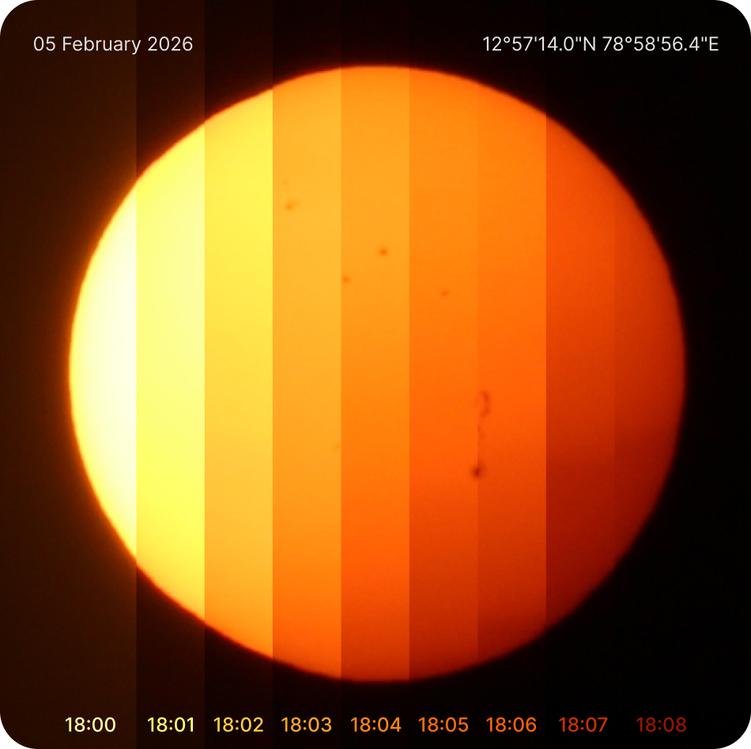
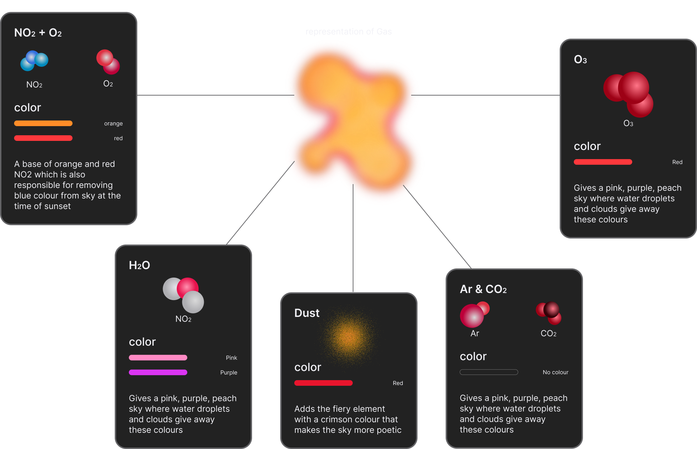
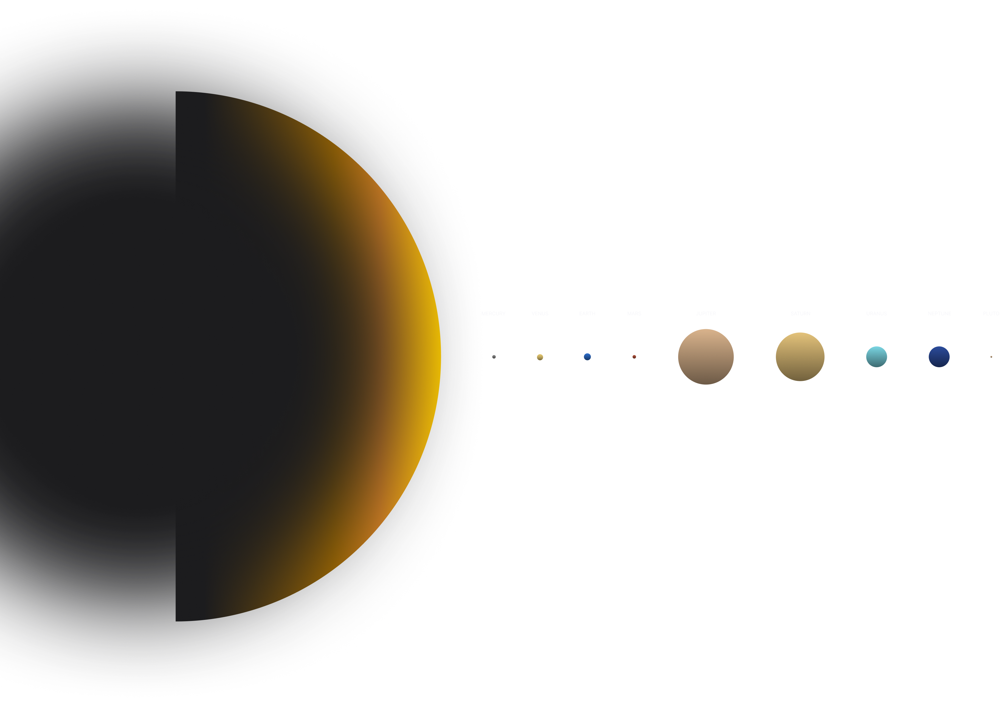
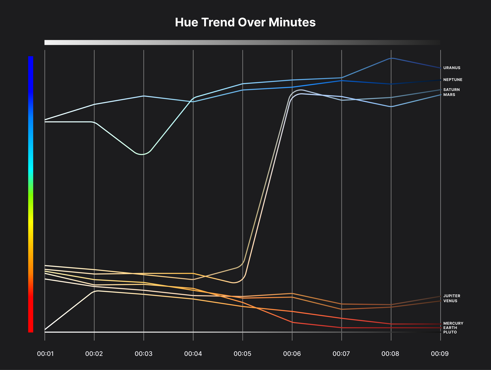
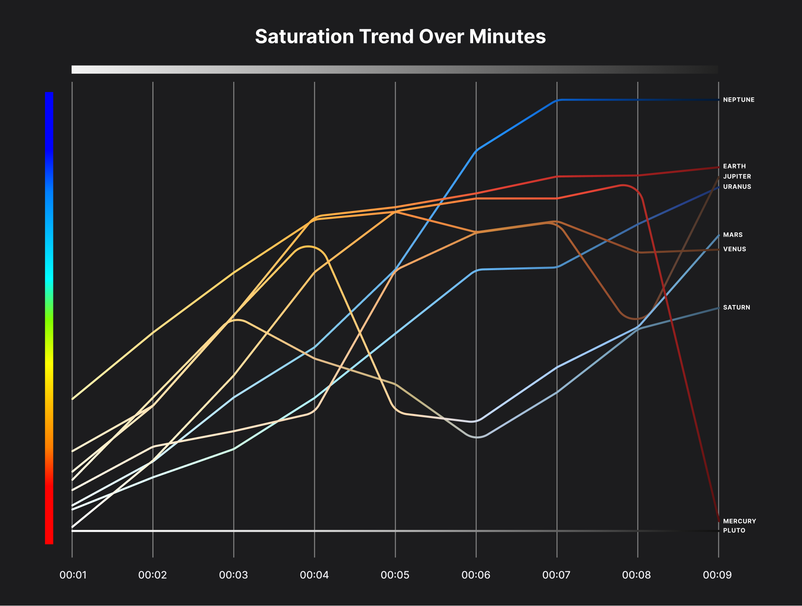
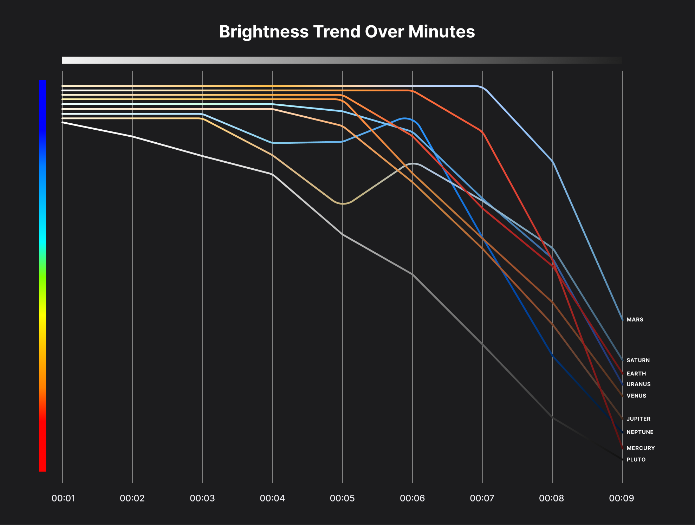
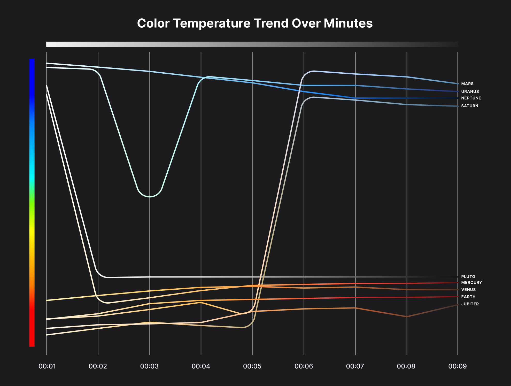

figure 1 shows image captured over the time of sunset by Jaisriram
Camera settings
Dimension5184 x 3456
CameraCanon EOS 70D
LensEF-S55-250mm F/4-5.6 IS II
ExposureManual EV
Focal length250 mm
Aperturef/22
Shutter speed1/4000 sec
ISO100
Which Gas on earth gives what color

Sunsets Don't Feel the Same for Everyone

Sunset on different planets
Simulating environment of other planets on earth to check how it effects the sunset in those 9 minutes, which is as good as seeing the sunset from other planets
Tap the colour and steal the sky
Now we have colour as data
What does color theory tells us about sunset of each planet
Hue

what we perceive as "natural" is actually a localized illusion shaped by our planet.
The progression in sunsets behaves like a dynamic color gradient: each planet shifts along the spectrum based on how its atmosphere filters and scatters light.
Saturation

"rich" or "dull" color is actually a result of atmospheric instability
Saturation across planetary sunsets behaves like an intensity curve some planets amplify color vividness over time while others fade or collapse into muted tones.
Brightness

Lights DIM - making light falloff the hidden controller of visual experience.
Brightness across planetary sunsets follows a decay curve most planets rapidly lose luminance over time, shifting scenes from high visibility to low-light conditions.
Temperature

atmospheric conditions can suddenly reframe a sunset from "warm comforting" to "cold distant"
Color temperature across planetary sunsets shifts between warm and cool extremes some planets maintain cool (bluish) tones while others stabilize in warm (redish/orange) ranges.